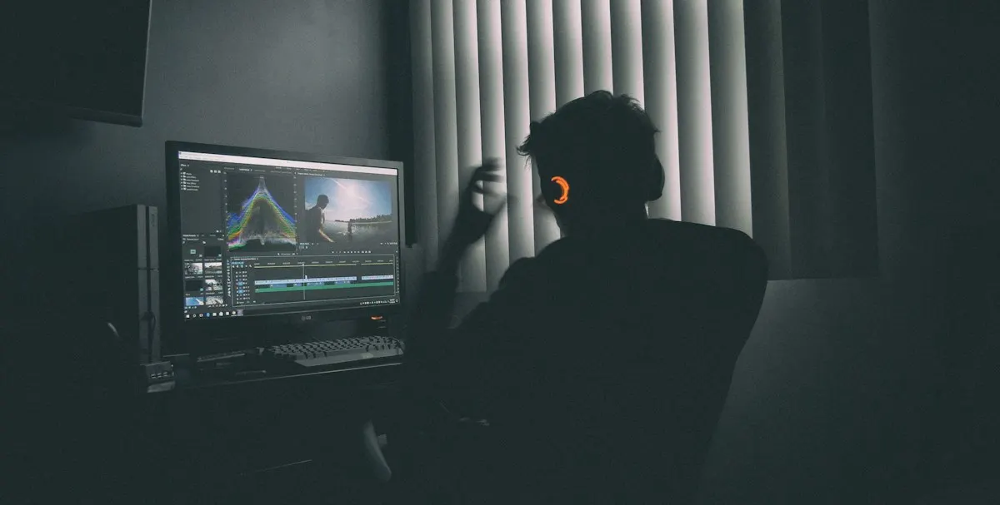

Fabiano Couto
I analyze data and systems for large companies and industries across Brazil: SQL, Oracle, the Sankhya ERP, KPIs and integrations. A career built on partnerships that last for years. Analiso dados e sistemas para grandes empresas e indústrias do Brasil: SQL, Oracle, ERP Sankhya, indicadores e integrações. Uma carreira feita de parcerias de anos.
Every job became a partnership of years.Cada trabalho virou uma parceria de anos.
I don’t change jobs often. Where I go, I stay and grow with the people who trust my work. Não troco de emprego com facilidade. Onde eu entro, eu fico, e cresço junto com quem confia no meu trabalho.
-
4yearsanosDays InnGeneral maintenance, U.S.Manutenção geral, EUA
-
3yearsanosTGI FridaysLine cook, U.S.Cozinheiro de linha, EUA
-
20yearsanosTV Gazeta (Rede Gazeta)Master control, camera and editingControle mestre, câmera e edição
-
TodayHojeHero1Systems and data analystAnalista de sistemas e dados
What I help you see clearlyO que eu te ajudo a enxergar de forma clara
How I got here.Como cheguei até aqui.
From hands-on work to data analysis, each stage prepared me for the next. Do trabalho manual à análise de dados, cada fase me preparou para a seguinte.
-
01Early yearsAinda jovem
Maintenance & hands-on workManutenção e trabalho manual
I started out with strength, honest work and determination.Comecei com força, trabalho honesto e determinação.
Days Inn and TGI Fridays, Hyannis MADays Inn e TGI Fridays, Hyannis MA -
0220 years20 anos
TelevisionTelevisão
With focus and dedication, I worked across several areas of a major TV station.Com foco e dedicação, passei por várias áreas de uma grande emissora.
TV Gazeta (Rede Gazeta) -
03TodayHoje
Systems & data analysisAnálise de sistemas e de dados
Experience earned through study, focus, hard work and dedication, serving large companies and industries across Brazil.Experiência conquistada com estudo, foco, trabalho e dedicação, atendendo grandes empresas e indústrias do Brasil.
Hero1 Tecnologia e Negócios
Recent certificationsCertificados recentes
Databases in PracticeBanco de Dados na Prática
Escola Superior de Redes (ESR / RNP) · Online · 10 hours · November 2026Escola Superior de Redes (ESR / RNP) · On-line · 10 horas · novembro de 2026
Backend DevelopmentDesenvolvimento Backend
Escola Superior de Redes (ESR / RNP) · Online · 10 hours · November 2026Escola Superior de Redes (ESR / RNP) · On-line · 10 horas · novembro de 2026
People Management and NegotiationGestão de Pessoas e Negociação
Universidade Cruzeiro do Sul · Online · 40 hours · October 2026Universidade Cruzeiro do Sul · On-line · 40 horas · outubro de 2026
Computer ForensicsPerícia Forense Computacional
Universidade Cruzeiro do Sul · Online · 40 hours · September 2026Universidade Cruzeiro do Sul · On-line · 40 horas · setembro de 2026
Two decades in live television.Duas décadas de televisão ao vivo.
At TV Gazeta, part of Rede Gazeta, I worked across several areas. I ran master control, a room full of monitors and equipment where every second on air depends on the operator, and I worked as a camera operator and video editor. Na TV Gazeta, da Rede Gazeta, passei por várias áreas. Operei o controle mestre, uma sala cheia de monitores e equipamentos onde cada segundo no ar depende do operador, e trabalhei como cinegrafista e editor de vídeo.

After that, through study, focus, hard work and dedication, I moved into systems and data analysis, serving large companies and industries across Brazil. Master control taught me to watch many signals at once and act before a problem reaches the viewer. A good dashboard does the same job for a business. Depois desse período, com estudo, foco, trabalho e dedicação, cheguei à análise de sistemas e de dados, atendendo grandes empresas e indústrias do Brasil. O controle mestre me ensinou a acompanhar muitos sinais ao mesmo tempo e agir antes que o problema chegue ao telespectador. Um bom dashboard faz o mesmo por uma empresa.
Let's work together.Vamos trabalhar juntos.
Available for systems and data analyst roles, Sankhya projects and hands-on work in maintenance, kitchen and hospitality. I answer in Portuguese or English. Disponível para vagas de analista de sistemas e de dados, projetos Sankhya e trabalho manual em manutenção, cozinha e hotelaria. Respondo em português ou inglês.